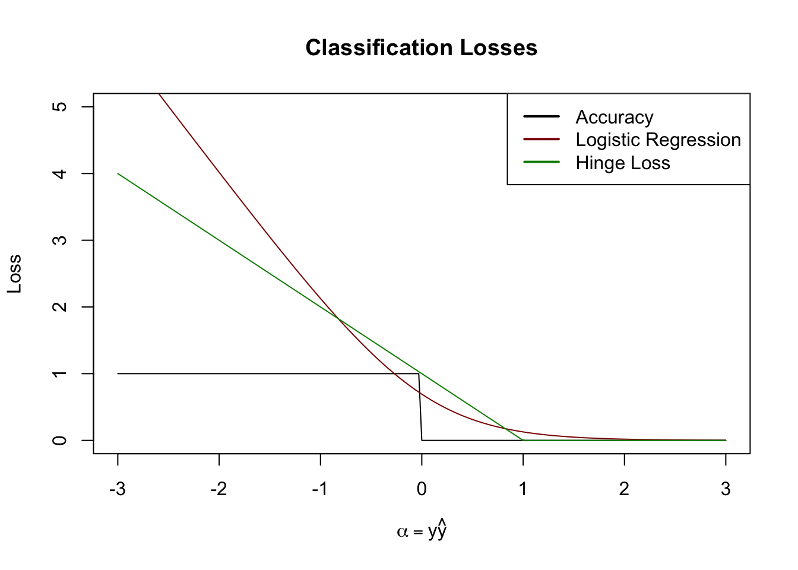
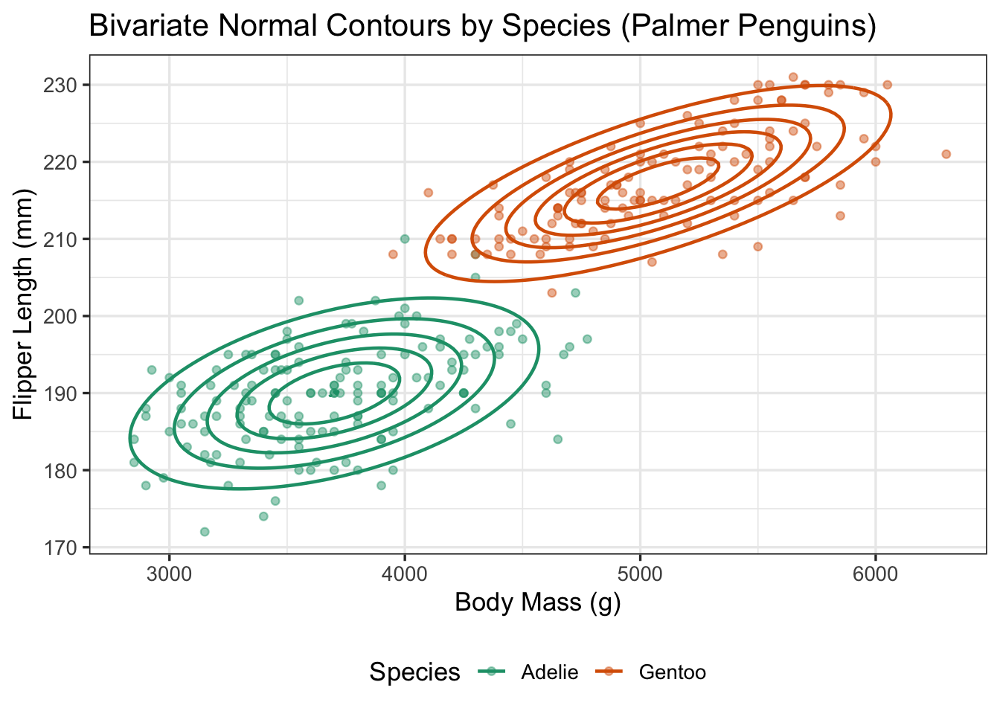
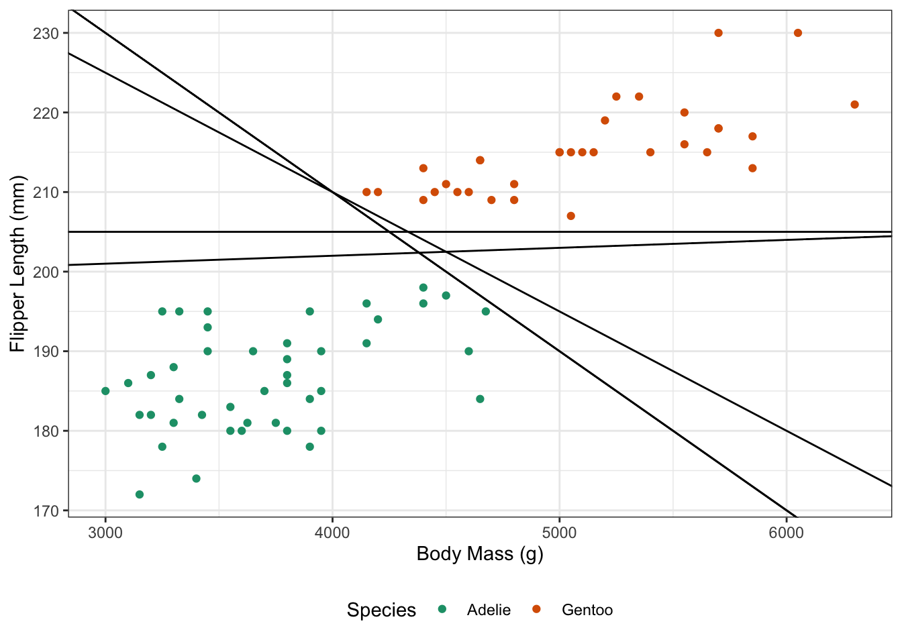
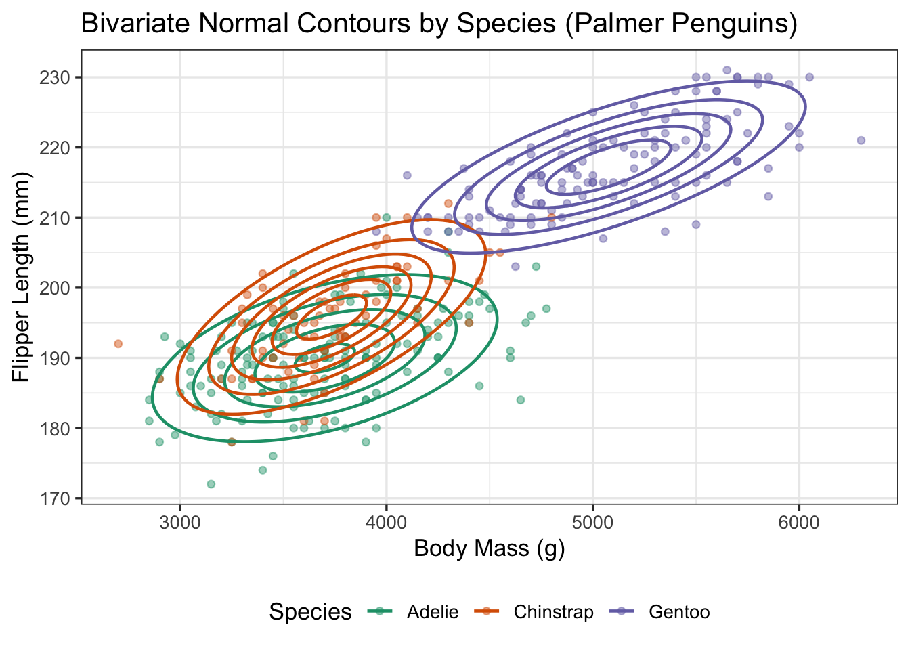

Notes for Lecture #15: Unit III. Classification & Ensemble Methods: Other Linear Classifiers
Outline:
Today we are going to consider alternate linear classifiers. Recall that, in regression, we defined a method by a combination of loss function (MSE, MAE, etc) and function class (linear, polynomial, etc.). As a result, we would fit many different linear models to the same data set and they were all optimal / correct under some different set of assumptions.
The same phenomenon will hold here for linear classifiers as well: for each of the methods discussed in these notes, we will still have a linear decision boundary, like logistic regression, but they will be defined by different objective functions. A key difference from the regression context is that we don’t typically truly care about these loss functions; the things we might care about (minimizing FNR subject to a FPR constraint) don’t really play nicely with optimization. Instead, we use a surrogate loss function and tune parameters (both the decision threshold and more traditional things like a \(\lambda\) regularization strength parameter) to optimize for the downstream things we actually care about.
That is to say, it is perfectly reasonable and indeed quite common to do something like this for ‘ridge logistic regression’
Split data into three parts–\(\Dcal_1, \Dcal_2, \Dcal_3\)–for parameter fitting, hyperparemeter selection, and final accuracy estimation respectively.
-
Fit ridge logistic regression at a variety of \(\lambda\) values on \(\Dcal_1\), recording \(\hat{\bbeta}_{\lambda}\) for each \(\lambda\):
\[\begin{align*} \hat{\bbeta}_{\lambda_1} &= \argmin_{\bbeta} \text{LogisticLoss}(\bbeta; \Dcal_1) + \frac{\lambda_1}{2} \|\bbeta\|_2^2 \\ \hat{\bbeta}_{\lambda_2} &= \argmin_{\bbeta} \text{LogisticLoss}(\bbeta; \Dcal_1) + \frac{\lambda_K}{2} \|\bbeta\|_2^2\\ \dots \\ \hat{\bbeta}_{\lambda_K} &= \argmin_{\bbeta} \text{LogisticLoss}(\bbeta; \Dcal_1) + \frac{\lambda_K}{2} \|\bbeta\|_2^2 \end{align*}\]
For each \(\hat{\bbeta}_{\lambda_k}\), compute a false positive rate and false negative rate on \(\Dcal_2\): call these \(\text{FPR}_{\lambda_k}, \text{FNR}_{\lambda_k}\) respectively
-
Pick the \(\lambda\) that minimizes FNR subject to a FPR constraint:
\[\lambda_* = \argmin_{\lambda \in \{\lambda_1, \dots, \lambda_K\}} \begin{cases} \text{FNR}_{\lambda_k} & \text{ if } \text{FPR}_{\lambda_k} < \alpha \\ \infty & \text{ otherwise } \end{cases}\]
Estimate final FNR, FPR on \(\Dcal_3\)
Here we have tuned for something that wasn’t actually the loss function used to define our method. This is totally reasonable! While ‘direct’ optimization of the thing we care about is nice, when its not possible, strategies like this are perfectly fine.
(Aside: we always had this option in regression as well: we could have optimized ridge-OLS to minimize MAE, but just as a practical matter, it’s faster, easier, and better to just fit LAD directly.)
So with all of this said, what are the different methods we might choose to create?
Discriminative vs Generative
Historically, linear classifiers have been divided into two broad camps:
- Generative Classifiers
- Discriminative Classifiers
Here ‘discriminative’ doesn’t refer to bias or prejudice; just the older sense of ‘able to tell things apart’. Both of these will ultimately result in linear decision boundaries, but they get there from different starting points.
Discriminative classifiers are more similar to what we saw in the regression context:
- We take \(\bX\) as a given, assume that \(Y\) depends on it somehow, and directly minimize a loss function to ‘fit’ that relationship.
The only modeling choice here is how we relate \(\bX\) and \(Y\) or, equivalently, the loss function we use in our optimization problem.
As we saw last time, logistic regression is an instance of this type of classifier. In particular, recall that we built logistic regression out of a tripartite generalized linear model.
\[\begin{align*} \eta &= \bx^{\top}\bbeta \tag{Linear Predictor} \\ \mu &= \text{logistic adapter}(\eta) \tag{Link/Adapter Term}\\ &= \frac{e^{\eta}}{1+e^{\eta}} \\ &= \frac{1}{1+e^{-\eta}} \\ &= \textsf{SoftMax}(\eta, 0) \\ Y &\sim \text{Bernoulli}(\mu) \tag{Sampling/Observation Model} \end{align*}\]
But how can we actually build an optimization problem here? Well, let’s first ‘collapse’ terms so that we can put this whole model on one line:
\[Y \sim \text{Bernoulli}\left(\frac{1}{1+e^{-\bx^{\top}\bbeta}}\right)\]
When faced with a statistical model like this, a common strategy is to use a maximum likelihood estimation procedure. That is, we pick the \(\bbeta\) that ‘fit our data best’ in the sense of giving us the highest probability of seeing what we saw.1 Note that we can write the general Bernoulli probability mass function (PMF) as:
\[Z\sim\text{Bernoulli}(p) \Leftrightarrow \P(Z = z) = p^z(1-p)^{1-z} =\begin{cases} p & z = 1 \\ 1- p & z = 0 \end{cases}\]
With the above, this gives us:
\[\begin{align*} \P(Y = y_i | \bX = \bx_i) &= \left(\frac{1}{1+e^{-\bx_i^{\top}\bbeta}}\right)^{y_i}\left(1 - \frac{1}{1+e^{-\bx_i^{\top}\bbeta}}\right)^{1-y_i} \\ &= \left(\frac{1}{1+e^{-\bx_i^{\top}\bbeta}}\right)^{y_i}\left( \frac{e^{-\bx_i^{\top}\bbeta}}{1+e^{-\bx_i^{\top}\bbeta}}\right)^{1-y_i} \\ &= \frac{(e^{-\bx_i^{\top}\bbeta})^{1-y_i}}{1+e^{-\bx_i^{\top}\bbeta}} \\ &= \frac{e^{-\bx_i^{\top}\bbeta(1-y_i)}}{1+e^{-\bx_i^{\top}\bbeta}} \\ \end{align*}\]
If we multiply this across \(n\) IID observations, we get a joint PMF of
\[\P(\bbeta) = \prod_{i=1}^n \frac{e^{-\bx_i^{\top}\bbeta(1-y_i)}}{1+e^{-\bx_i^{\top}\bbeta}}\]
so we can fit logistic regression by just solving the following problem:
\[\hat{\bbeta}_{\text{Logistic}} = \argmax_{\bbeta}\prod_{i=1}^n \frac{e^{-\bx_i^{\top}\bbeta(1-y_i)}}{1+e^{-\bx_i^{\top}\bbeta}}\]
Easy, right?
No, not really. This is conceptually complete, but practically it’s a huge pain. When we multiply many probabilities together, we get very small numbers which can make a computer struggle. We like the ‘average’ look of ERMs, not this weird product structure. And we like to think about minimizing loss instead of maximizing probability.
Thankfully, a little bit of mathematical slight of hand here will help us out:
\[\argmax_{x} f(x) \Leftrightarrow \argmin_{x} -\frac{1}{n}\log f(f)\]
(Convince yourself that this is true!)
Applying this to our problem above, we get:
\[\begin{align*} \hat{\bbeta}_{\text{Logistic}} &= \argmax_{\bbeta}\prod_{i=1}^n \frac{e^{-\bx_i^{\top}\bbeta(1-y_i)}}{1+e^{-\bx_i^{\top}\bbeta}} \\ &= \argmax_{\bbeta}\log \prod_{i=1}^n \frac{e^{-\bx_i^{\top}\bbeta(1-y_i)}}{1+e^{-\bx_i^{\top}\bbeta}} \\ &=\argmax_{\bbeta}\sum_{i=1}^n \log\left[ \frac{e^{-\bx_i^{\top}\bbeta(1-y_i)}}{1+e^{-\bx_i^{\top}\bbeta}}\right] \\ &=\argmax_{\bbeta}\sum_{i=1}^n -\bx_i^{\top}\bbeta(1-y_i) - \log\left[ 1+e^{-\bx_i^{\top}\bbeta}\right] \\ &=\argmin_{\bbeta}\sum_{i=1}^n \bx_i^{\top}\bbeta(1-y_i) + \log\left[ 1+e^{-\bx_i^{\top}\bbeta}\right] \\ &=\argmin_{\bbeta}\frac{1}{n}\sum_{i=1}^n \bx_i^{\top}\bbeta(1-y_i) + \log\left[ 1+e^{-\bx_i^{\top}\bbeta}\right] \\ &=\argmin_{\bbeta}\frac{1}{n}\sum_{i=1}^n -y_i\bx_i^{\top}\bbeta + \bx_i^{\top}\bbeta + \log\left[ 1+e^{-\bx_i^{\top}\bbeta}\right] \\ &= \argmin_{\bbeta}\frac{1}{n}\sum_{i=1}^n -y_i\bx_i^{\top}\bbeta + \log[e^{\bx_i^{\top}\bbeta}] + \log\left[ 1+e^{-\bx_i^{\top}\bbeta}\right] \\ &= \argmin_{\bbeta}\frac{1}{n}\sum_{i=1}^n -y_i\bx_i^{\top}\bbeta + \log\left[e^{\bx_i^{\top}\bbeta}*(1+e^{-\bx_i^{\top}\bbeta})\right] \\ &= \argmin_{\bbeta}\frac{1}{n}\sum_{i=1}^n -y_i\bx_i^{\top}\bbeta + \log\left[e^{\bx_i^{\top}\bbeta}+e^{\bx_i^{\top}\bbeta-\bx_i^{\top}\bbeta}\right] \\ &= \argmin_{\bbeta}\frac{1}{n}\sum_{i=1}^n -y_i\bx_i^{\top}\bbeta + \log\left[1 + e^{\bx_i^{\top}\bbeta}\right] \\ &= \argmin_{\bbeta}\E_{\text{Training Data}} \text{Logistic Loss}(\bbeta; y_i, \bx_i) \\ \end{align*}\]
Whew… So we see that logistic regression is (after quite some work!) just another ERM with a funny loss. This particular loss is sometimes known as binomial deviance or cross entropy loss, but I just like to call it the logistic loss as that makes the original source the most clear.
This loss function can seem a bit opaque - what is it actually doing? Let’s take it case by case:
- when \(y_i=0\), the first term is zero, so we just want to minimize \(\log(1 + e^{\bx_i^{\top}\bbeta})\). Note that \(\log(1+e^x)\approx x\) for \(x\) not too small, so this is really just minimizing \(\bx_i^{\top}\bbeta\). Hence, the optimization problem tries to push \(\bx_i^{\top}\bbeta\) smaller for observations where \(y_i=0\)
- when \(y_i=1\), the first term is bigger, and minimizing \(-\bx_i^{\top}\bbeta\) encourages us to make \(\bx_i^{\top}\bbeta\) larger for observations where \(y_i=1\)
Hence, under all the funny math and weird signs, the directions really do work out the way we’d expect.
In some other contexts, if we use \(y = \pm 1\) instead of \(y \in \{0, 1\}\), the same math can be shown to work out to
\[\argmin_{\bbeta}\frac{1}{n}\sum_{i=1}^n \log\left[1 + e^{-y_i\bx_i^{\top}\bbeta}\right]\]
which is maybe a bit cleaner, even if it leaves the ‘Bernoulli’-structure less evident.
But this is still a bit opaque: graphing things make it even clearer. Let’s plot \(\alpha = \hat{y}y\). So \(\alpha \to 1\) when \(y = 1\) and our probability is large (‘confident and correct’) or \(y=-1\) and our probability is small; in the case where \(y=1\) but our ‘score’ is close to \(-1\), we get a negative number (‘confidently wrong’). Graphically this looks something like this:
This is interesting! We see that the loss function we might ‘really’ care about (pure accuracy) has the ‘flatness’ problem we previously saw with \(\ell_0\) penalties and best subsets; that’s why we can’t really just say ‘maximize accuracy’ directly. But the logistic loss is sort of a nice convex (everywhere upwards facing) approximation.
Are there others we could use? Clearly yes, we could use a sort of ‘one-sided’ absolute value like this:
alpha <- seq(-3, 3, length.out=201)
acc <- function(alpha) ifelse(alpha < 0, 1, 0)
lr_loss <- function(alpha) log(1 + exp(-2*alpha))
hinge_loss <- function(alpha) pmax(0, 1-alpha)
plot(alpha, acc(alpha), type="l",
xlab=expression(alpha == y * hat(y)),
ylab="Loss",
main="Classification Losses",
ylim=c(0, 5))
lines(alpha, lr_loss(alpha), col="red4")
lines(alpha, hinge_loss(alpha), col="green4")
legend("topright",
col=c("black", "red4", "green4"),
lwd=2,
legend=c("Accuracy", "Logistic Regression", "Hinge Loss"))
where here the green line is given by \[(1 - \alpha)_+ = \begin{cases} 1 - \alpha & \text{ when } 1 - \alpha > 0 \\ 0 & \text{ when } 1 - \alpha \leq 0 \end{cases}\] Here, \((x)_+ = \max\{0, x\}\) is known as the positive part operator.
Where does this hinge loss come from? To get there, let’s take a detour into margin classifiers. Supposed we have the penguins data we have used before and we want to classify species based on body_mass and flipper_len. If we omit Chinstrap penguins to make this a binary problem, we get the following for the 2007 measurements

Clearly, this is not a hard problem. We can draw a line that achieves perfect accuracy here. In fact, we can draw several such lines:

While these are all perfect in sample, I would be more worried about some of them out of sample. In particular, the downward sloping diagonal lines that get close to some of the Gentoos are a bit too close for comfort. If I had to pick a line, I’d like to select the one that gives me the biggest ‘margin for error’: that is, that stays farthest away from the training points.
Let’s look at what this means for each of the lines shown above. For each line, we can find the closest training point and measure its (perpendicular) distance to the line:
(An interactive demonstration of a classification margin should load above. Please wait just a few seconds if you don’t see it yet.)
TODO Write out loss function that creates this geometric viewpoint on SVMs
The so-called maximum margin classifier is the linear classifier that maximizes the margin while ensuring all points are correctly classified. In the above problem, this is a line with slope \(-0.003\) and intercept \(216\) (both approximate). Try it out above.
But in general this is the sort of thing we want to solve algorithmically rather than by brute force. Some (rather painful, but elementary) algebraic geometry gets us the optimization problem:
\[\min_{\beta_0, \bbeta \in \R^{p+1}} \|\bbeta\|_2^2 \text{ subject to } y_i(\bbeta^{\top}\bx_i + \beta_0) \geq 1\]
There’s quite a lot of strangeness here. Firstly, note that we’re now using the \(y \in \pm 1\) convention. This isn’t the biggest deal in the world, but it makes the math easier and avoids some dangerous zeros floating around. More notably, we have an objective function that doesn’t really ‘touch’ the data directly.
This problem might seem a bit mysterious (and it is), but, in brief, recall that the distance from a line to a point for a decision boundary of the form2 \(\bbeta^{\top}{\bx} + \bbeta_0 = 0\) will have the form
\[\text{dist} = \frac{|\bbeta^{\top}\bx + \bbeta_0|}{\|\bbeta\|_2}\]
To deal with the numerator, we note that it must be \(\pm 1\) (depending on the sign of \(y_i\)) from our optimization problem. From there, we simply note that
\[\max \text{Margin} = \max \frac{1}{\|\bbeta\|_2} \Leftrightarrow \min \|\bbeta\|_2^2\]
where we introduce the extra power of two in the final expression to make the (eventual) calculus easier.3
So our objective problem for maximum margin classifiers has two parts:
\[\min_{\beta_0, \bbeta \in \R^{p+1}} \underbrace{\|\bbeta\|_2^2}_{\text{Maximizes margin}} \text{ subject to } \underbrace{ y_i(\bbeta^{\top}\bx_i + \beta_0) \geq 1}_{\text{Each point classified correctly}}\]
TODO: Allow errors.
Generative Classifiers
Our other big set of classifiers are so called generative classifiers. These start for a model for \(\bX\) from \(y\) – the ‘reverse’ of our usual model – and then uses Bayes’ Rule to ‘invert the reverse’ and get a forward model. (You might remember that Bayes rule was referred to as the Law of Inverse Probability in the early days as it does exactly this.) We actually already saw a toy generative classifier in our earlier notes, so let’s talk about what these might look like in a more significant application.
If we fit a bivariate normal distribution to the body mass and flipper length of each of our three penguin species, we might get something like this:

Let’s ignore Chinstrap penguins for a bit and focus on a binary Adelie vs Gentoo classifier:

Clearly, points closer to the ‘core’ of the Adelie region (bottom-left, green) are more likely to be Adelie and points closer to the top-right are more likely to be the larger Gentoo penguins. Can we build this into a formal classification rule? Indeed, we can!
TODO: Write more
Key idea: normal distribution probabilities are based on distances (norms) so being ‘closer’ to the core of one set increases our confidence for that class. Different normal distributions just screw around with how we actually measure distance.
Footnotes
Many statistical procedures you have seen before are instances of this sort of MLE with a suitable model. The sample mean is the MLE for estimating the mean of a normal distribution, OLS is the MLE for a Gaussian linear model, etc.↩︎
The zero on the right hand side here captures the fact that if \(\pm 1\) are data points that are definitely classified, \(0\) must be our decision boundary falling exactly between the two.↩︎
The derivative of \(\beta_1^2 + \beta_2^2\) is much easier than the derivative of \(\sqrt{\beta_1^2 + \beta_2^2}\).↩︎